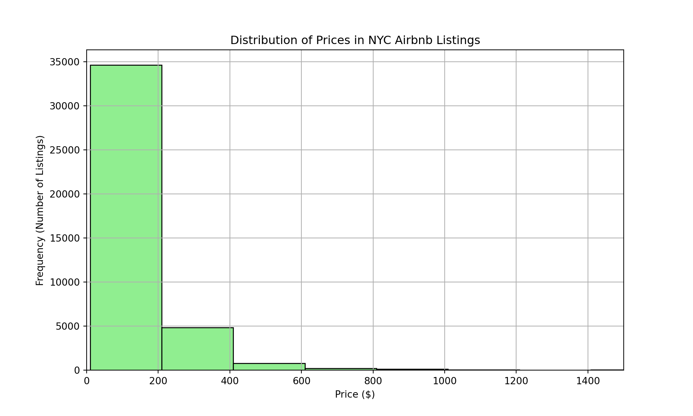
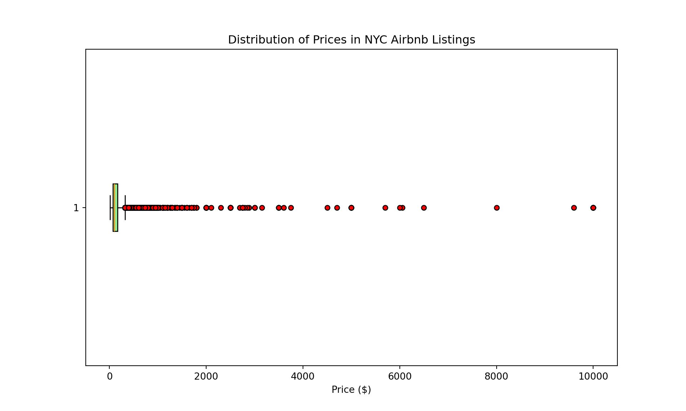
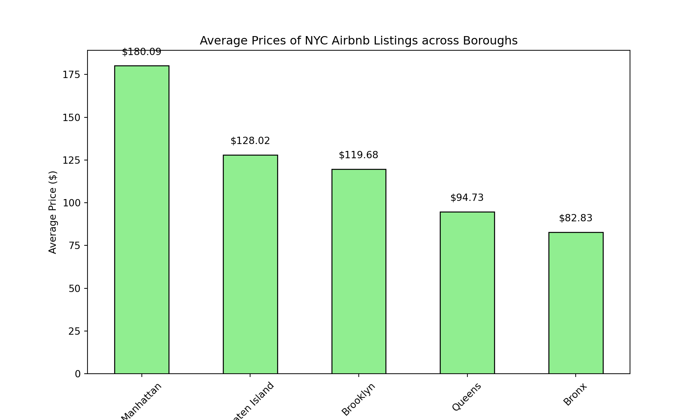
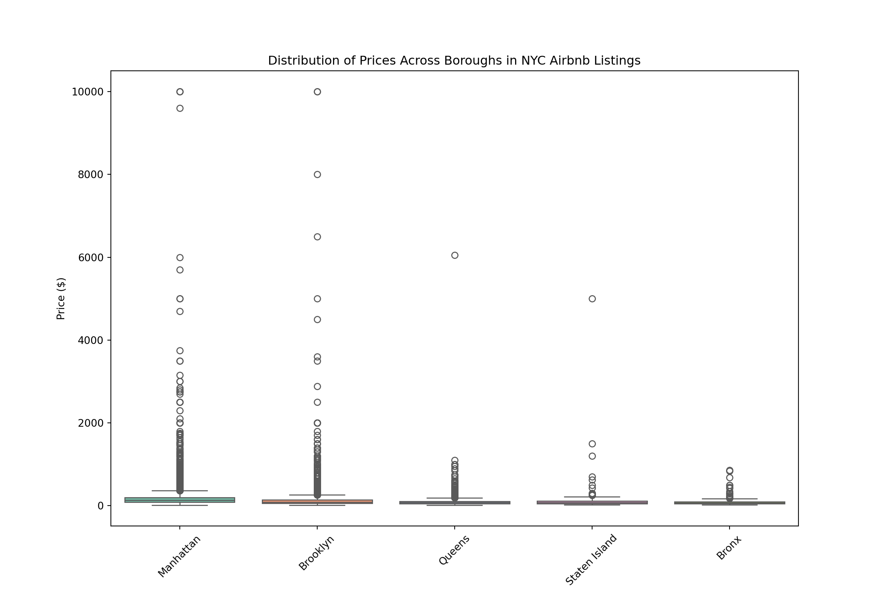
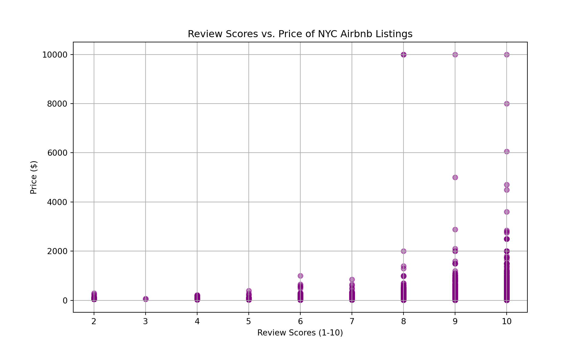
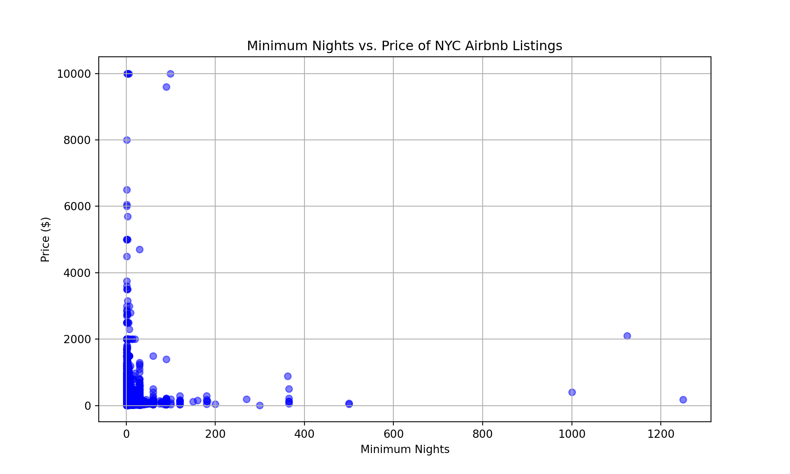
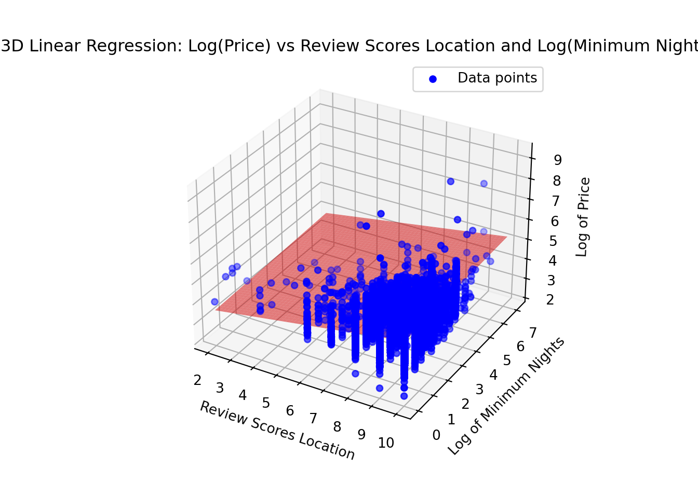

Project Introduction and Context
This project explores Airbnb rental prices in New York City in 2017.Through this analysis, I aim to uncover patterns, trends and relationships between:
Dataset Source
The data used in this project were sourced from Inside Airbnb as of September 2, 2017. The version of the dataset employed for this analysis can be accessed here.
Methodology: Supervised Machine Learning for Predicting Rental Prices
To predict rental prices based on various factors like borough, minimum nights, and review scores, we use supervised machine learning techniques, specifically regression analysis. This approach is suitable because our target variable (rental price) is continuous, and we want to understand how different independent variables (features) such as minimum nights and review scores influence that price.
Programming Languages used
I imported libraries from pandas, numpy, matplotlib, scikit-learn and seaborn.
Data Summary
The dataset contains 40,753 rows and 17 columns. The columns include key information about Airbnb listings, such as listing ID, location review scores, host details, neighbourhood information, pricing, room type, and review metrics. Key columns in the dataset include ‘id’, ‘review_scores_location’, ‘price’, ‘room_type’, ‘number_of_reviews’, ‘reviews_per_month’, and ‘availability_365’. There are no duplicate records in this dataset.
Exploratory Results Summary
The dataset reveals a notable distribution of Airbnb listings across New York City boroughs, with Manhattan having the highest count at 19,212 listings, followed by Brooklyn with 16,810 listings. Other boroughs such as Queens, the Bronx, and Staten Island have significantly fewer listings.
The average prices per borough vary, with Manhattan being the most expensive at an average of $180.09, while the Bronx is the least expensive at $82.83. Staten Island and Brooklyn have moderate pricing, with averages of $128.02 and $119.68, respectively.
Manhattan stands out as the most expensive area, while the Bronx remains the least expensive.
## (0.0, 1500.0)
Most NYC Airbnb listings are between $0 to $250.## {'whiskers': [<matplotlib.lines.Line2D object at 0x13ca5a240>, <matplotlib.lines.Line2D object at 0x13cb901d0>], 'caps': [<matplotlib.lines.Line2D object at 0x13cb903b0>, <matplotlib.lines.Line2D object at 0x13cb90680>], 'boxes': [<matplotlib.patches.PathPatch object at 0x13cae1490>], 'medians': [<matplotlib.lines.Line2D object at 0x13cb90980>], 'fliers': [<matplotlib.lines.Line2D object at 0x13cb90c20>], 'means': []}
NYC Airbnb listings can reach prices as high as $10,000.## (array([0, 1, 2, 3, 4]), [Text(0, 0, 'Manhattan'), Text(1, 0, 'Staten Island'), Text(2, 0, 'Brooklyn'), Text(3, 0, 'Queens'), Text(4, 0, 'Bronx')])
The average prices per borough vary, with Manhattan being the most expensive at an average of $180.09, while the Bronx is the least expensive at $82.83.## ([0, 1, 2, 3, 4], [Text(0, 0, 'Manhattan'), Text(1, 0, 'Brooklyn'), Text(2, 0, 'Queens'), Text(3, 0, 'Staten Island'), Text(4, 0, 'Bronx')])
The maximum prices per borough vary, with Manhattan being the most expensive at around $10,000, while the Bronx is the least expensive at $1,000.
Rental price tend to increase with review scores (1-10) up to a score of 8. Beyond this point, maximum rental prices for listings with a score of 8 or higher remain relatively consistent at around $10,000.
In general, rental price tend to decrease with an increase in minimum nights.LinearRegression()In a Jupyter environment, please rerun this cell to show the HTML representation or trust the notebook.
LinearRegression()
## {'coefficients': array([0.17286817, 0.04287051]), 'intercept': 3.237960031866904}
In this analysis, we are focused on exploring the relationship between rental prices, review scores, and minimum nights for Airbnb listings in Manhattan. Given that Manhattan has the highest number of listings, the highest average rental price, and some of the most expensive properties, it presents a unique opportunity for deeper analysis.
We use regression analysis to model how rental prices are influenced by review scores and minimum nights. By doing so, we aim to understand whether higher review scores or longer minimum stays are associated with higher rental prices. The regression output will help quantify these relationships and provide insights into which factors are more influential in determining rental price within this borough.
Methods
In the code, we applied the featured scaling using logarithmic transformation to two features: Price & Minimum Nights, with large values.
The review_scores_location was left unchanged since its values were already on a manageable scale.
Regression Output Explanation:
The regression model has produced the following results:
Intercept (3.237960031866904): This represents the predicted log of the price when both minimum_nights and review_scores_location are at their baseline values (e.g., zero). It is the starting point of the regression line.
Coefficient for review_scores_location (0.17286817): This means that for each score increase in Airbnb review score, the log of the price is expected to increase by approximately 0.173. This means that for each airbnb review score increase, the price is expected to increase by approximately 18.9%.
Coefficient for minimum_nights (0.04287051): This tells us that for each 1% increase in minimum_nights, the log of the price will increase by approximately 0.043%.
In conclusion, airbnb review scores is more predictive of prices of airbnb!